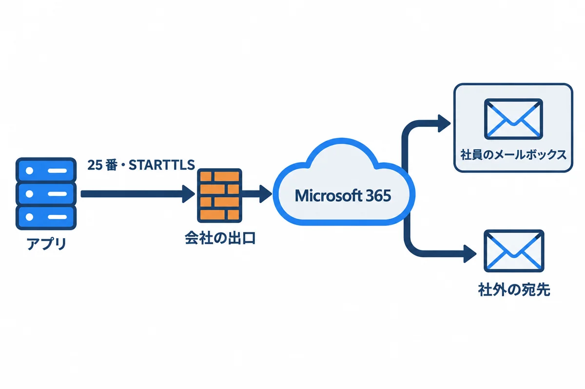
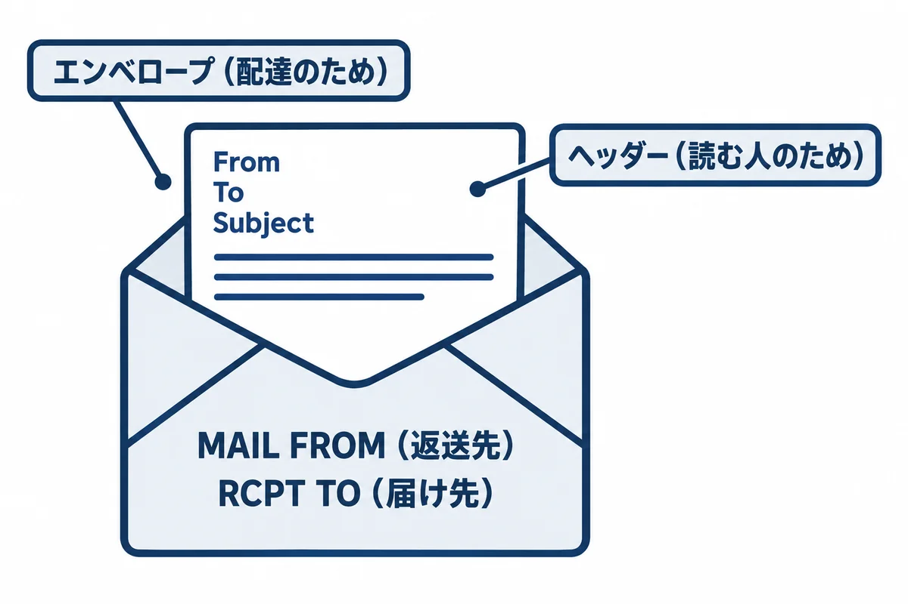
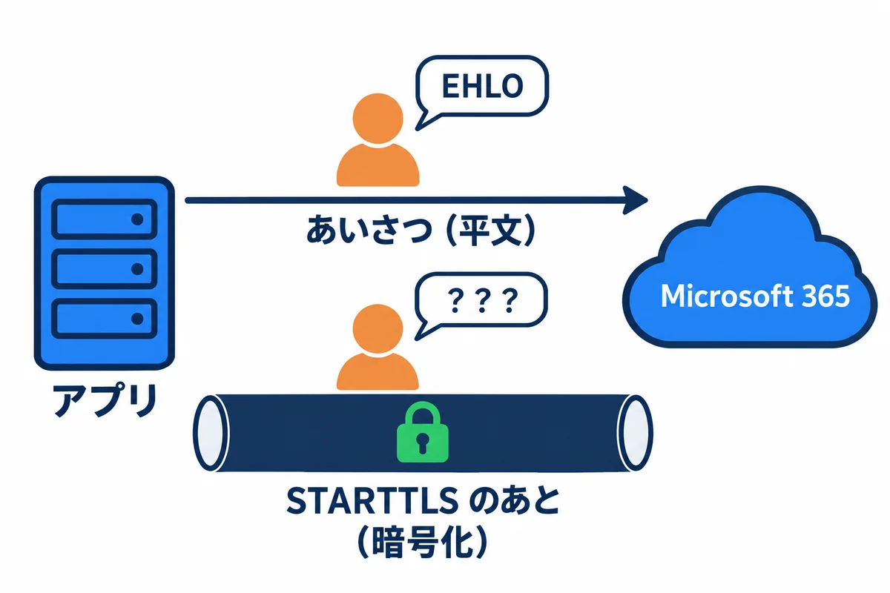
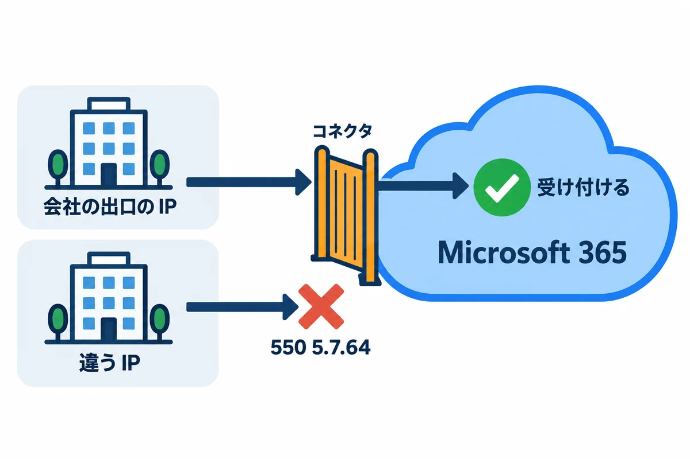
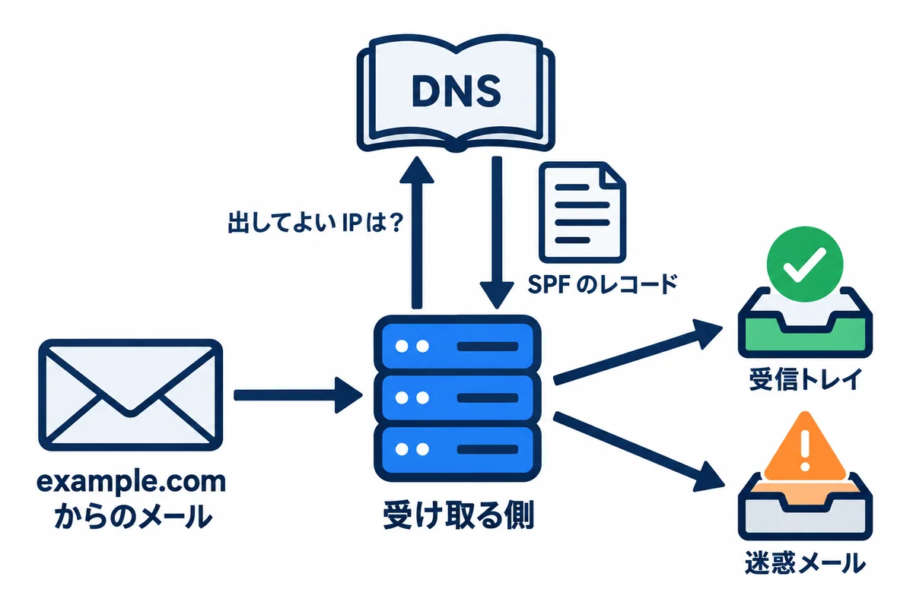
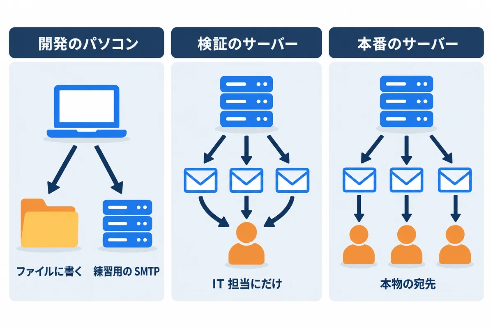

色の付いた枠のコードの、右上の「コピー」ボタンを押してください。コピーしたら、ブラウザーの「戻る」で PDF に戻れます。
06 と 08 の練習アプリは、「承認のお願い」「差し戻し」「回覧完了」などをメールで知らせます。会社のサーバーでは、onprem の 04 の 10 章のとおり、Microsoft 365 の SMTP リレー（25 番・STARTTLS）にメールを渡します。
この巻では、
| 練習のファイル | 中身 |
|---|---|
samples/09_mail/smtp_sink.py |
練習用の「受け取るだけ」の SMTP サーバー（どこへも転送しない） |
samples/09_mail/send_test.py |
Python の smtplib で、テストのメールを 1 通送る |
samples/06_django_react/backend/workflow/management/commands/send_test_mail.py |
Django のアプリの「テストのメールを送る」コマンド |
samples/08_topcoat_app/webapp/src/cli.rs の send_test_mail |
Topcoat のアプリの「テストのメールを送る」コマンド |

| 登場するもの | 役目 | この資料では |
|---|---|---|
| アプリ（送る側） | メールを作り、SMTP で渡す | 06 の Django・08 の Topcoat |
| 会社の出口 | 会社のネットワークとインターネットの境目。通してよい通信を決める | 25 番を外へ通してもらう（onprem の 04 の 10.2） |
| Microsoft 365（Exchange Online） | 受け取ったメールを、宛先まで届ける（リレー＝中継） | example-com.mail.protection.outlook.com の 25 番 |
| 宛先のメールボックス | 社員が Outlook で読む所 | 承認者・依頼者 |
用語: SMTP（Simple Mail Transfer Protocol。メールを渡すときの決まり）。リレー（受け取ったメールを、次の所へ中継すること）。MX（ドメインの「メールの受付」の場所。DNS に書いてある）
▶ 準備: 00 の 6.4（Python。標準の部品だけを使うので、仮想環境は要りません）。下のコマンドは、PowerShell で資料のフォルダから cd webapp_learning\samples\09_mail と移動してから打ちます。練習用のサーバーの窓は動かしたままにして、送る側はもう 1 つ PowerShell を開いて、同じフォルダに移動してから打ちます。
本物のメールサーバーに送らずに、会話を見るため、受け取るだけの SMTP サーバーを用意しました。届いた会話をそのまま画面に出し、メールを received\ に保存します。どこへも転送しないので、本物の人には届きません。
samples/09_mail/smtp_sink.py:
"""練習用の「受け取るだけ」の SMTP サーバー。
届いた SMTP の会話を、そのまま画面に出し（C: は送ってきた側、S: はこのサーバー）、
メールを received/ フォルダに .eml で保存します。どこへも転送しません（本物の人には届きません）。
開発のパソコンだけで使います。Python の標準の部品だけで動きます（Python 3.11 以上）。
使い方:
python smtp_sink.py 127.0.0.1:1025 で待つ（暗号化なし）
python smtp_sink.py --tls cert.pem key.pem STARTTLS も使えるようにする（証明書は README の手順で作る）
止めるときは Ctrl+C。
"""
import argparse
import asyncio
import datetime
import pathlib
import ssl
HOST = "127.0.0.1"
OUT = pathlib.Path(__file__).with_name("received")
def show(who: str, line: str) -> None:
print(f"{who}: {line}", flush=True)
async def handle(reader: asyncio.StreamReader, writer: asyncio.StreamWriter, tls_ctx: ssl.SSLContext | None) -> None:
peer = writer.get_extra_info("peername")
print(f"---- {peer[0]}:{peer[1]} からつながった ----", flush=True)
async def send(line: str) -> None:
show("S", line)
writer.write((line + "\r\n").encode("ascii"))
await writer.drain()
async def recv() -> str | None:
data = await reader.readline()
if not data:
return None
line = data.decode("utf-8", "replace").rstrip("\r\n")
show("C", line)
return line
tls = False
mail_from, rcpts = None, []
await send("220 localhost ESMTP practice-sink")
while (line := await recv()) is not None:
cmd = line.split(" ", 1)[0].upper()
if cmd in ("EHLO", "HELO"):
if cmd == "HELO":
await send("250 localhost")
continue
lines = ["250-localhost", "250-SIZE 36700160", "250-8BITMIME"]
if tls_ctx and not tls:
lines.append("250-STARTTLS") # 「暗号化に切りかえられます」という知らせ
lines.append("250 SMTPUTF8")
for item in lines:
await send(item)
elif cmd == "STARTTLS" and tls_ctx and not tls:
await send("220 2.0.0 Ready to start TLS")
try:
await writer.start_tls(tls_ctx)
except ssl.SSLError as e:
# 送る側が、このサーバーの証明書を信じなかった（自分で作った証明書のときに起きる）
print(f"---- 暗号化に切りかえられなかった: {e.reason} ----", flush=True)
break
print("---- ここから先は暗号化されている（途中の機器からは読めない）----", flush=True)
tls, mail_from, rcpts = True, None, [] # 暗号化のあとは、EHLO からやり直す決まり
elif cmd == "MAIL":
mail_from, rcpts = line[10:].strip(), []
await send("250 2.1.0 OK")
elif cmd == "RCPT":
rcpts.append(line[8:].strip())
await send("250 2.1.5 OK")
elif cmd == "DATA":
if not mail_from or not rcpts:
await send("503 5.5.1 MAIL and RCPT first")
continue
await send("354 End data with <CR><LF>.<CR><LF>")
raw, in_header, body_lines = [], True, 0
while True:
data = await reader.readline()
if data in (b".\r\n", b".\n", b""):
break
if data.startswith(b".."):
data = data[1:] # 行の頭の「.」を 2 つにして送る決まり（ドットの詰め直し）を戻す
raw.append(data)
text = data.decode("utf-8", "replace").rstrip("\r\n")
if in_header:
show("C", text)
in_header = text != ""
else:
body_lines += 1
show("C", f"（本文 {body_lines} 行。表示は省く）")
show("C", ".")
OUT.mkdir(exist_ok=True)
name = datetime.datetime.now().strftime("%Y%m%d-%H%M%S-%f") + ".eml"
(OUT / name).write_bytes(b"".join(raw))
await send(f"250 2.0.0 OK queued as {name}")
mail_from, rcpts = None, []
elif cmd == "RSET":
mail_from, rcpts = None, []
await send("250 2.0.0 OK")
elif cmd == "NOOP":
await send("250 2.0.0 OK")
elif cmd == "QUIT":
await send("221 2.0.0 Bye")
break
else:
await send("502 5.5.2 Command not recognized")
writer.close()
print("---- 切れた ----", flush=True)
async def main() -> None:
parser = argparse.ArgumentParser(description="練習用の、受け取るだけの SMTP サーバー")
parser.add_argument("--port", type=int, default=1025)
parser.add_argument("--tls", nargs=2, metavar=("CERT", "KEY"), help="STARTTLS に使う証明書と鍵")
args = parser.parse_args()
tls_ctx = None
if args.tls:
tls_ctx = ssl.create_default_context(ssl.Purpose.CLIENT_AUTH)
tls_ctx.load_cert_chain(*args.tls)
server = await asyncio.start_server(lambda r, w: handle(r, w, tls_ctx), HOST, args.port)
print(f"{HOST}:{args.port} で待っています（STARTTLS: {'あり' if tls_ctx else 'なし'}）。Ctrl+C で止める。", flush=True)
async with server:
await server.serve_forever()
if __name__ == "__main__":
try:
asyncio.run(main())
except KeyboardInterrupt:
pass
▶ ここで初めて出てくるコード
async（Python）: Python で、中でawaitを使える関数にする印（async def handle(…):）。asyncioの仕組みの上で、たくさんの接続を同時にさばけます。await（Python）: Python のasyncの関数の中で、時間のかかる処理が終わるまで待つ書き方。await writer.drain()。while（Python）: Python で、条件がTrueの間くり返す書き方。while True:は、breakで抜けるまでずっとくり返します。break（Python）: Python のくり返しを、途中で抜ける命令。pass（Python）: 「何もしない」という Python の命令。中身が要らないけれど、形の上で何か書く必要がある所に置きます。.Path()（Python）:pathlib.Path(場所)は、ファイルやフォルダの場所を表す物を作る関数です。/でつなげられます。.with_name()（Python）:Pathの、最後の名前だけを取りかえた場所を返すメソッド。Path(__file__).with_name("received")は「このファイルと同じフォルダの received」。.get_extra_info()（Python）:asyncioの接続から、相手の住所などの情報を取り出すメソッド。.drain()（Python）:asyncioの接続で、書いた物を送り終わるまで待つメソッド（await writer.drain()）。.readline()（Python）: 1 行だけ読むメソッド。.decode()（Python）: バイトの並びを、文字列に直すメソッド。data.decode("utf-8", "replace")は、読めない所を�にして直します。.rstrip()（Python）: 文字列の後ろ（右側）から、空白や指定した文字を取り除くメソッド。.rstrip("\r\n")は行の終わりの改行を取ります。.upper()（Python）: 英字を大文字にした文字列を返すメソッド。.start_tls()（Python）:asyncioの接続を、途中から暗号化（TLS）に切りかえるメソッド（STARTTLS。09 巻）。.mkdir()（Python）:Pathのフォルダを作るメソッド。exist_ok=Trueで「もうあってもよい」、parents=Trueで途中のフォルダもまとめて作ります。.write_bytes()（Python）:Pathのファイルに、バイトの並びをそのまま書くメソッド。.join()（Python）: Python で、区切り文字の方に付けて、リストの中身をつなぐメソッド。" ".join(["a", "b"])は"a b"（TypeScript とは書く順番が逆なので注意）。.close()（Python）: 接続やファイルを閉じるメソッド。.ArgumentParser()（Python）:argparse.ArgumentParser()は、コマンドの引数（--port 2525など）を読み取る係を作る関数です。.parse_args()（Python）: 決めておいた引数の形で、実際に渡された引数を読み取るメソッド。.create_default_context()（Python）:ssl.create_default_context()は、暗号化（TLS）の設定を、おすすめの値で作る関数です。.load_cert_chain()（Python）: TLS の設定に、サーバーの証明書と秘密鍵のファイルを読み込むメソッド。.start_server()（Python）:asyncio.start_server(関数, ホスト, ポート)は、接続を待ち受けるサーバーを始める関数です。接続が来るたびに、渡した関数が動きます。.serve_forever()（Python）: HTTP のサーバーを、止めるまでずっと動かし続けるメソッド。.run()（Python）:asyncio.run(main())は、非同期の関数（async def）を動かして、終わるまで待ちます。非同期のプログラムは、ここから始まります。
cd webapp_learning\samples\09_mail
python smtp_sink.py # 127.0.0.1:1025 で待つ。この窓は動かしたままにする
▶ ここで初めて出てくるコード
python（Python の道具）: Python を動かすコマンド。python -c "…"は、"…"の中の Python のコードを 1 回だけ動かします。
samples/09_mail/send_test.py:
"""Python の smtplib で、テストのメールを 1 通送る（送る側から見た SMTP の会話を出す）。
使い方:
python send_test.py 127.0.0.1:1025 へ、暗号化なしで
python send_test.py --starttls --cafile cert.pem STARTTLS で暗号化してから（自分で作った証明書を信じる）
"""
import argparse
import smtplib
import ssl
from email.message import EmailMessage
def main() -> None:
parser = argparse.ArgumentParser()
parser.add_argument("--host", default="127.0.0.1")
parser.add_argument("--port", type=int, default=1025)
parser.add_argument("--starttls", action="store_true")
parser.add_argument("--cafile", help="信じる証明書（練習用に自分で作った物）")
args = parser.parse_args()
msg = EmailMessage()
msg["From"] = "noreply@example.com"
msg["To"] = "sato@example.com"
msg["Subject"] = "【依頼・承認】送信テスト"
msg.set_content("SMTP の練習のメールです。\n")
with smtplib.SMTP(args.host, args.port, local_hostname="dev-pc", timeout=10) as smtp:
smtp.set_debuglevel(1) # やり取りを画面に出す
smtp.ehlo()
if args.starttls:
smtp.starttls(context=ssl.create_default_context(cafile=args.cafile))
smtp.ehlo() # 暗号化のあとは、もう一度あいさつする
smtp.send_message(msg)
print("送りました。")
if __name__ == "__main__":
main()
▶ ここで初めて出てくるコード
.set_content()（Python）: メール（EmailMessage）の本文を決めるメソッド。.SMTP()（Python）:smtplib.SMTP(ホスト, ポート)は、メールを送るためにメールのサーバー（SMTP）へつなぐ関数です。.set_debuglevel()（Python）:smtp.set_debuglevel(1)で、SMTP のやり取りを画面に表示します（練習や、届かない時の調べ）。.ehlo()（Python）: SMTP のサーバーに、最初のあいさつ（EHLO）を送るメソッド。.starttls()（Python）:smtplibで、メールサーバーとの接続を、途中から暗号化（TLS）に切りかえるメソッド。smtp.starttls()のあとに送る中身は、暗号化されます。.send_message()（Python）: 用意したメールを、SMTP のサーバーへ渡して送るメソッド。
別の窓で python send_test.py を動かしたときの、受け取る側（練習用のサーバー）の画面（C: は送ってきた側、S: はサーバーの返事）:
127.0.0.1:1025 で待っています（STARTTLS: なし）。Ctrl+C で止める。
---- 127.0.0.1:59901 からつながった ----
S: 220 localhost ESMTP practice-sink
C: ehlo dev-pc
S: 250-localhost
S: 250-SIZE 36700160
S: 250-8BITMIME
S: 250 SMTPUTF8
C: mail FROM:<noreply@example.com> size=254
S: 250 2.1.0 OK
C: rcpt TO:<sato@example.com>
S: 250 2.1.5 OK
C: data
S: 354 End data with <CR><LF>.<CR><LF>
C: From: noreply@example.com
C: To: sato@example.com
C: Subject: =?utf-8?b?44CQ5L6d6aC844O75om/6KqN44CR6YCB5L+h44OG44K544OI?=
C: Content-Type: text/plain; charset="utf-8"
C: Content-Transfer-Encoding: 8bit
C: MIME-Version: 1.0
C:
C: （本文 1 行。表示は省く）
C: .
S: 250 2.0.0 OK queued as 20261102-012242-260773.eml
C: QUIT
S: 221 2.0.0 Bye
---- 切れた ----
送る側（smtplib）の画面（set_debuglevel(1) で出した物。最初の所だけ）:
send: 'ehlo dev-pc\r\n'
reply: b'250-localhost\r\n'
reply: b'250-SIZE 36700160\r\n'
reply: b'250-8BITMIME\r\n'
reply: b'250 SMTPUTF8\r\n'
reply: retcode (250); Msg: b'localhost\nSIZE 36700160\n8BITMIME\nSMTPUTF8'
send: 'mail FROM:<noreply@example.com> size=254\r\n'
reply: b'250 2.1.0 OK\r\n'
reply: retcode (250); Msg: b'2.1.0 OK'
send: 'rcpt TO:<sato@example.com>\r\n'
reply: b'250 2.1.5 OK\r\n'
reply: retcode (250); Msg: b'2.1.5 OK'
| 行 | 意味 |
|---|---|
S: 220 … |
「つながりました。話してください」 |
C: EHLO 名前 |
あいさつ（自分の名前を名乗る）。返事の 250-… の行に、サーバーが使える機能が並ぶ |
C: MAIL FROM:<…> |
送り主（届かなかったときの返送先）。3 章 |
C: RCPT TO:<…> |
届け先。宛先が 3 人なら 3 回送る |
C: DATA → S: 354 |
「本文を送ります」→「どうぞ。最後に . だけの行を送って」 |
ヘッダー・空の行・本文・. |
メールそのもの（4 章） |
S: 250 2.0.0 OK queued … |
「受け取りました」。ここで、送る側の仕事は終わり |
C: QUIT → S: 221 |
「終わります」 |
返事の頭の 3 けたの数で、結果が分かります。
| 頭の数 | 意味 | 送る側がすること |
|---|---|---|
| 2xx | うまくいった | 次へ進む |
| 3xx | 続きを待っている（354 など） |
続きを送る |
| 4xx | 一時的にだめ（混んでいる など） | しばらくしてから送り直す |
| 5xx | ずっとだめ（宛先が無い・許されていない など） | 送り直さない。原因を直す |
2.1.0 のような数は、もっと細かい理由です（例: 6.1 の 550 5.7.64 の 5.7.64 は「許されていない送り主」）。

メールには、宛先が 2 か所にあります。
| 所 | 書く物 | だれのため |
|---|---|---|
| エンベロープ（封筒の表） | MAIL FROM・RCPT TO（SMTP の命令で渡す） |
配達する仕組みのため。実際の届け先は、こちらで決まる |
| ヘッダー（便せんの頭） | From:・To:・Subject: など |
読む人のため。Outlook に出るのは、こちら |
RCPT TO にだけ書き、ヘッダーには書きません。だから、ほかの宛先の人からは見えません。MAIL FROM へ戻ります。2.2 の会話のヘッダーに、こんな行がありました。
Subject: =?utf-8?b?44CQ5L6d6aC844O75om/6KqN44CR6YCB5L+h44OG44K544OI?=
SMTP は、もとは英字だけを運ぶ決まりでした。日本語は、MIME（メールに英字以外を入れる決まり）で、英字だけの形に変えて運びます。=?utf-8?b?…?= は「UTF-8 の文字を、base64 という形で書いた」という印です。Python で読み解くと（実際の出力）:
【依頼・承認】送信テスト
Content-Transfer-Encoding: 8bit（UTF-8 のまま）で送りました（8.1・8.2 の会話）。どちらも決まりに合った形で、Outlook では普通に読めます。| ポート | 主な使い道 | 暗号化 |
|---|---|---|
| 25 | サーバーどうしの受け渡し。Microsoft 365 の SMTP リレーもこれ | 始めは暗号化なし → STARTTLS で切りかえる |
| 587 | メールソフトから送る（ID とパスワードで入る） | STARTTLS で切りかえる |
| 465 | 587 と同じ使い道 | 最初から暗号化（implicit TLS） |

練習用のサーバーを、自分で作った証明書で STARTTLS を使えるようにして（samples/09_mail/README.md の手順）、Python から送った時の、受け取る側の画面:
127.0.0.1:1026 で待っています（STARTTLS: あり）。Ctrl+C で止める。
---- 127.0.0.1:52058 からつながった ----
S: 220 localhost ESMTP practice-sink
C: ehlo dev-pc
S: 250-localhost
S: 250-SIZE 36700160
S: 250-8BITMIME
S: 250-STARTTLS
S: 250 SMTPUTF8
C: STARTTLS
S: 220 2.0.0 Ready to start TLS
---- ここから先は暗号化されている（途中の機器からは読めない）----
C: ehlo dev-pc
S: 250-localhost
S: 250-SIZE 36700160
S: 250-8BITMIME
S: 250 SMTPUTF8
C: mail FROM:<noreply@example.com> size=254
S: 250 2.1.0 OK
C: rcpt TO:<sato@example.com>
S: 250 2.1.5 OK
C: data
S: 354 End data with <CR><LF>.<CR><LF>
C: From: noreply@example.com
C: To: sato@example.com
C: Subject: =?utf-8?b?44CQ5L6d6aC844O75om/6KqN44CR6YCB5L+h44OG44K544OI?=
C: Content-Type: text/plain; charset="utf-8"
C: Content-Transfer-Encoding: 8bit
C: MIME-Version: 1.0
C:
C: （本文 1 行。表示は省く）
C: .
S: 250 2.0.0 OK queued as 20261102-012511-944465.eml
C: QUIT
S: 221 2.0.0 Bye
---- 切れた ----
EHLO の返事に 250-STARTTLS（暗号化に切りかえられます）があります。STARTTLS → 220 … Ready to start TLS のあと、ここから先は暗号化されます。会社のネットワークの途中の機器からは、宛先も本文も読めません（練習用のサーバーは、受け取る本人なので読めます）。EHLO からやり直す決まりです。2 回目の返事には、もう STARTTLS はありません。暗号化は、相手が本物でなければ意味がありません。にせの相手と暗号化しても、にせの相手には全部読まれるからです。そこで、暗号化のときに相手の証明書（「このサーバーは本物です」という、信頼できる所が発行した身分証）を確かめます。
練習用の証明書は自分で作った物なので、アプリは信じません。実際に 08 の Topcoat のアプリから送った結果:
エラー: 送れませんでした（渡した先: localhost:1026（STARTTLS: 使う））: could not deliver the mail
原因: Connection error: Connection error: invalid peer certificate: UnknownIssuer
原因: Connection error: invalid peer certificate: UnknownIssuer
原因: invalid peer certificate: UnknownIssuer
そのときの、受け取る側の画面:
---- 127.0.0.1:52060 からつながった ----
S: 220 localhost ESMTP practice-sink
C: EHLO （パソコンの名前）
S: 250-localhost
S: 250-SIZE 36700160
S: 250-8BITMIME
S: 250-STARTTLS
S: 250 SMTPUTF8
C: STARTTLS
S: 220 2.0.0 Ready to start TLS
---- 暗号化に切りかえられなかった: TLSV1_ALERT_UNKNOWN_CA ----
---- 切れた ----
06 の Django のアプリから送った結果:
CommandError: 送れませんでした（渡した先: localhost:1026（STARTTLS: 使う））: SSLCertVerificationError: [SSL: CERTIFICATE_VERIFY_FAILED] certificate verify failed: self-signed certificate (_ssl.c:1081)
MAIL FROM まで進んでいない）。用語: 証明書（サーバーの身分証。信頼できる発行元（認証局）の署名が付いている）。UnknownIssuer（発行元が分からない＝信じられる発行元の署名が無い）
本番と同じ設定（STARTTLS を使う）で、STARTTLS を使えない相手（2.1 の暗号化なしの練習用サーバー）に送った結果です。
Topcoat:
エラー: 送れませんでした（渡した先: 127.0.0.1:1025（STARTTLS: 使う））: could not deliver the mail
原因: internal client error: STARTTLS is not supported on this server
原因: STARTTLS is not supported on this server
Django:
CommandError: 送れませんでした（渡した先: 127.0.0.1:1025（STARTTLS: 使う））: SMTPNotSupportedError: STARTTLS extension not supported by server.
受け取る側の画面（あいさつだけで切れた。どちらも同じ）:
---- 127.0.0.1:55579 からつながった ----
S: 220 localhost ESMTP practice-sink
C: ehlo （パソコンの名前）
S: 250-localhost
S: 250-SIZE 36700160
S: 250-8BITMIME
S: 250 SMTPUTF8
---- 切れた ----
SMTP_USE_TLS=false）は、08 では APP_ENV=development のときだけ使えます（サーバーで書くと、起動しない）。
550 5.7.64 TenantAttribution; Relay Access Denied で断られます（onprem の 04 の 10.3）。MAIL_FROM）は、会社が Microsoft 365 で使っているドメインのアドレスにします（例: noreply@example.com）。メールボックスは無くてもかまいません。
受け取る側は、「このドメインのメールを出してよいのは、どこか」を DNS（SPF のレコード）に聞いて確かめます。会社の出口の IP アドレスが書いてないと、届いても迷惑メールのフォルダに入りやすくなります。
SPF のレコードの例（203.0.113.10 は、説明用に決められた IP アドレス。本物は会社の出口の IP アドレス）:
example.com. TXT "v=spf1 include:spf.protection.outlook.com ip4:203.0.113.10 -all"
| 部分 | 意味 |
|---|---|
include:spf.protection.outlook.com |
Microsoft 365 から出すメールは、よい |
ip4:203.0.113.10 |
この IP アドレスから出すメールも、よい |
-all |
それ以外から出た物は、にせ物として扱ってよい |
config/settings.py のメールの所:
# メール: 本番は Microsoft 365 の SMTP リレー（25 番・STARTTLS。onprem の 04 の 10 章、この資料の 09）
EMAIL_BACKEND = env("EMAIL_BACKEND", "django.core.mail.backends.smtp.EmailBackend")
EMAIL_FILE_PATH = BASE_DIR / "sent_mail" # 開発用（dev.ps1 は、メールをここにファイルで書く）
EMAIL_HOST = env("SMTP_HOST", "localhost")
EMAIL_PORT = int(env("SMTP_PORT", "25"))
EMAIL_USE_TLS = env("SMTP_USE_TLS", "true").lower() == "true"
EMAIL_TIMEOUT = 30
DEFAULT_FROM_EMAIL = env("MAIL_FROM", "noreply@example.com")
# 検証では、全部のメールをこの宛先に送る（社員に本物の依頼が届かないように。onprem の 04 の 10.4）
MAIL_REDIRECT_TO = os.environ.get("MAIL_REDIRECT_TO", "")
依頼の流れの中で送る所（workflow/services.py の _mail。06 前編の 5.2）:
def _mail(to: str, subject: str, template: str, context: dict) -> None:
body = render_to_string(f"workflow/mail/{template}", context)
subject = f"【依頼・承認】{subject}"
if settings.MAIL_REDIRECT_TO: # 検証: 本物の宛先には送らず、決まった宛先へ
body = f"（検証のメールです。本来の宛先: {to}）\n\n{body}"
subject, to = f"【検証】{subject}", settings.MAIL_REDIRECT_TO
# 保存が確定してから送る。途中で取り消されたら、送らない
transaction.on_commit(lambda: send_mail(subject, body, None, [to]))
足した「テストのメールを送る」コマンド workflow/management/commands/send_test_mail.py:
"""テストのメールを 1 通送る（メールの道を確かめる。09 の巻）。使い方: .\\dev.ps1 send_test_mail --to 自分のアドレス
サーバーでは onprem の 05 の manage.ps1 から動かす。検証のサーバーでは、MAIL_REDIRECT_TO の宛先に届く。
アプリの不具合か、メールの道（SMTP リレー・ネットワーク）の問題かを分けるために使う。
"""
from django.conf import settings
from django.core.mail import send_mail
from django.core.management.base import BaseCommand, CommandError
from django.utils import timezone
class Command(BaseCommand):
help = "テストのメールを 1 通送る"
def add_arguments(self, parser):
parser.add_argument("--to", required=True, help="送り先（自分のアドレス）")
def handle(self, to, **options):
if settings.EMAIL_BACKEND.endswith("smtp.EmailBackend"):
where = f"{settings.EMAIL_HOST}:{settings.EMAIL_PORT}（STARTTLS: {'使う' if settings.EMAIL_USE_TLS else '使わない'}）"
else:
where = settings.EMAIL_BACKEND
subject = "【依頼・承認】送信テスト"
body = f"依頼・承認アプリからの、送信テストです。\n\n送った時刻: {timezone.localtime():%Y-%m-%d %H:%M}\n渡した先: {where}\n"
if settings.MAIL_REDIRECT_TO: # 検証のサーバーでは、services._mail と同じく宛先を差し替える
body = f"（検証のメールです。本来の宛先: {to}）\n\n{body}"
subject, to = f"【検証】{subject}", settings.MAIL_REDIRECT_TO
try:
send_mail(subject, body, None, [to])
except Exception as e: # 原因の種類（例外の名前）も出して、調べやすくする
raise CommandError(f"送れませんでした（渡した先: {where}）: {type(e).__name__}: {e}")
self.stdout.write(f"渡しました（宛先: {to}・渡した先: {where}）。届いたかを、受け取る側で確かめてください。")
▶ ここで初めて出てくるコード
.endswith()（Python）: 文字列が、その文字で終わっていればTrueを返すメソッド。
src/config.rs のメールの所:
let mail = match var("SMTP_HOST") {
Some(host) => {
let port = var("SMTP_PORT").unwrap_or_else(|| "25".into());
let port = port.parse().map_err(|_| ConfigError(format!("SMTP_PORT が数ではありません（今: {port}）")))?;
let starttls = match var("SMTP_USE_TLS").as_deref() {
None | Some("true") => true,
Some("false") => false,
Some(other) => return Err(ConfigError(format!("SMTP_USE_TLS は true か false です（今: {other}）"))),
};
// 暗号化しないで送るのは、開発のパソコンの中の練習だけ（会社のネットワークに平文で流さない）
if !starttls && !dev {
return Err(ConfigError("SMTP_USE_TLS=false は、APP_ENV=development のときだけ使えます".into()));
}
MailSettings::Smtp { host, port, starttls }
}
None if dev => MailSettings::File(PathBuf::from("sent_mail")),
None => return Err(ConfigError("SMTP_HOST がありません".into())),
};
src/mail.rs の、送り方を選ぶ所と、1 通を送る所（08 前編の 6.2）:
/// 設定から、Topcoat のメールの設定を作る（起動のときに 1 回）
pub fn mail_config(settings: &MailSettings) -> Result<MailConfig, topcoat::mail::SmtpError> {
let builder = MailConfig::builder();
let builder = match settings {
// 開発のパソコン: 送らずに、フォルダに .eml のファイルとして書く（メールソフトで開ける）
MailSettings::File(dir) => builder.transport(FileTransport::new(dir)),
// サーバー: M365 の SMTP リレーへ。STARTTLS で暗号化してから渡す（ポートは 25）。
// 相手が STARTTLS を使えなければ、送らずにエラーにする（暗号化しないまま送らない）
MailSettings::Smtp { host, port, starttls: true } => {
builder.transport(SmtpTransport::starttls(host)?.port(*port).build())
}
// 開発のパソコンだけ: 練習用の SMTP サーバー（09 の smtp_sink.py）へ、暗号化せずに渡す
MailSettings::Smtp { host, port, starttls: false } => builder.transport(SmtpTransport::unencrypted(host).port(*port).build()),
};
Ok(builder.build())
}
/// 1 通を、今すぐ送る（検証のサーバーなら宛先を差し替えてから）。失敗したらエラーを返す
pub async fn send_now(cx: &Cx, item: Outgoing) -> topcoat::Result<()> {
let config = &state(cx).config;
let item = redirect(config, item);
send_one(cx, &config.mail_from, &item).await
}
足した「テストのメールを送る」コマンド（src/cli.rs）:
/// テストのメールを 1 通送る。データベースは使わないので、つながなくても動く
async fn send_test_mail(config: Config, args: &[String]) -> anyhow::Result<()> {
let to = option(args, "--to")?;
let where_to = match &config.mail {
crate::config::MailSettings::File(dir) => format!("ファイル（{}）", dir.display()),
crate::config::MailSettings::Smtp { host, port, starttls } => {
format!("{host}:{port}（STARTTLS: {}）", if *starttls { "使う" } else { "使わない" })
}
};
let now = time::OffsetDateTime::now_utc().to_offset(crate::models::JST);
let body = format!(
"依頼・承認アプリからの、送信テストです。\n\n送った時刻: {}\nAPP_ENV: {:?}\n渡した先: {where_to}\n",
crate::models::fmt_datetime(now),
config.app_env
);
// connect_lazy は、本当に使うまでデータベースにつながない
let pool = sqlx::PgPool::connect_lazy(&config.database_url)?;
let state = AppState { pool, config: Arc::new(config) };
let cx = Cx::new(background_context(&state)?);
if let Err(e) = crate::mail::send_now(&cx, crate::mail::Outgoing::new(&to, "送信テスト", body)).await {
// 原因の連なり（「つなげない」←「証明書を確かめられない」など）を、全部書き出す
let mut message = e.to_string();
let mut source = e.source();
while let Some(s) = source {
message.push_str(&format!("\n 原因: {s}"));
source = s.source();
}
bail!("送れませんでした（渡した先: {where_to}）: {message}");
}
println!("渡しました（宛先: {to}・渡した先: {where_to}）。届いたかを、受け取る側で確かめてください。");
Ok(())
}

| 場所 | 06 Django | 08 Topcoat | 届く先 |
|---|---|---|---|
| 開発のパソコン（ふだん） | EMAIL_BACKEND=…filebased.EmailBackend |
SMTP_HOST を書かない |
sent_mail\ のファイル（だれにも届かない） |
| 開発のパソコン（SMTP の練習） | SMTP_HOST=127.0.0.1・SMTP_PORT=1025・SMTP_USE_TLS=false |
同じ | 練習用の SMTP サーバー（だれにも届かない） |
| 検証のサーバー | SMTP_HOST＝M365・MAIL_REDIRECT_TO＝IT 担当 |
同じ（APP_ENV=staging なら MAIL_REDIRECT_TO が無いと起動しない） |
IT 担当にだけ。件名に【検証】 |
| 本番のサーバー | SMTP_HOST＝M365 |
同じ（APP_ENV=production） |
本物の宛先 |
2.1 の練習用のサーバー（暗号化なし・1025 番）を動かしておきます。
cd webapp_learning\samples\08_topcoat_app\webapp
$env:SMTP_HOST = "127.0.0.1"; $env:SMTP_PORT = "1025"; $env:SMTP_USE_TLS = "false"
cargo run -- send-test-mail --to sato@example.com
Remove-Item Env:SMTP_HOST, Env:SMTP_PORT, Env:SMTP_USE_TLS # 終わったら消す
実際の出力:
渡しました（宛先: sato@example.com・渡した先: 127.0.0.1:1025（STARTTLS: 使わない））。届いたかを、受け取る側で確かめてください。
受け取る側の画面:
---- 127.0.0.1:61037 からつながった ----
S: 220 localhost ESMTP practice-sink
C: EHLO （パソコンの名前）
S: 250-localhost
S: 250-SIZE 36700160
S: 250-8BITMIME
S: 250 SMTPUTF8
C: MAIL FROM:<noreply@example.com>
S: 250 2.1.0 OK
C: RCPT TO:<sato@example.com>
S: 250 2.1.5 OK
C: DATA
S: 354 End data with <CR><LF>.<CR><LF>
C: From: noreply@example.com
C: To: sato@example.com
C: Subject: =?utf-8?b?44CQ5L6d6aC844O75om/6KqN44CR6YCB5L+h44OG44K544OI?=
C: Message-ID: <G7i8MkjsdigIk6YUQtEXPWrXUeJ6TbK3Xcab@（パソコンの名前）>
C: MIME-Version: 1.0
C: Date: Sun, 01 Nov 2026 16:28:47 +0000
C: Content-Type: text/plain; charset=utf-8
C: Content-Transfer-Encoding: base64
C:
C: （本文 5 行。表示は省く）
C: .
S: 250 2.0.0 OK queued as 20261102-012847-259494.eml
C: QUIT
S: 221 2.0.0 Bye
---- 切れた ----
received\ に保存されたメールを読み解いた中身:
【依頼・承認】送信テスト
依頼・承認アプリからの、送信テストです。
送った時刻: 2026-11-02 01:28
APP_ENV: Development
渡した先: 127.0.0.1:1025（STARTTLS: 使わない）
確かめること: EHLO のあとに、自分のパソコンの名前が出る（サーバーから送るときは、サーバーの名前になる）。Python の smtplib と違って、命令が大文字（MAIL FROM）。どちらも決まりの上では同じ意味です。
dev.env の EMAIL_BACKEND=…filebased… の行の頭に # を付けて消し、次の 4 行を足してから動かします（練習が終わったら戻す）。
EMAIL_BACKEND=django.core.mail.backends.smtp.EmailBackend
SMTP_HOST=127.0.0.1
SMTP_PORT=1025
SMTP_USE_TLS=false
cd webapp_learning\samples\06_django_react\backend
.\dev.ps1 send_test_mail --to sato@example.com
実際の出力:
渡しました（宛先: sato@example.com・渡した先: 127.0.0.1:1025（STARTTLS: 使わない））。届いたかを、受け取る側で確かめてください。
受け取る側の画面:
---- 127.0.0.1:55578 からつながった ----
S: 220 localhost ESMTP practice-sink
C: ehlo （パソコンの名前）
S: 250-localhost
S: 250-SIZE 36700160
S: 250-8BITMIME
S: 250 SMTPUTF8
C: mail from:<noreply@example.com> size=476
S: 250 2.1.0 OK
C: rcpt to:<sato@example.com>
S: 250 2.1.5 OK
C: data
S: 354 End data with <CR><LF>.<CR><LF>
C: Content-Type: text/plain; charset="utf-8"
C: MIME-Version: 1.0
C: Content-Transfer-Encoding: 8bit
C: Subject: =?utf-8?b?44CQ5L6d6aC844O75om/6KqN44CR6YCB5L+h44OG44K544OI?=
C: From: noreply@example.com
C: To: sato@example.com
C: Date: Sun, 01 Nov 2026 16:26:13 -0000
C: Message-ID: <179355037300.18408.10676062981774792886@（パソコンの名前）>
C:
C: （本文 4 行。表示は省く）
C: .
S: 250 2.0.0 OK queued as 20261102-012613-012042.eml
C: quit
S: 221 2.0.0 Bye
---- 切れた ----
| 場面 | 06 Django | 08 Topcoat |
|---|---|---|
暗号化なしの練習用サーバー（SMTP_USE_TLS=false） |
送れた | 送れた |
| STARTTLS を使えない相手（本番と同じ設定） | 送らない: SMTPNotSupportedError |
送らない: STARTTLS is not supported on this server |
| 信じられない証明書の相手（本番と同じ設定） | 送らない: CERTIFICATE_VERIFY_FAILED … self-signed certificate |
送らない: invalid peer certificate: UnknownIssuer |
作り方は違っても、守っている決まりは同じです。
届かないときは、手前から 1 つずつ確かめます。いきなりアプリを疑いません。
| 順番 | 確かめること | やり方 | 分かること |
|---|---|---|---|
| 1 | MX の名前を引けるか | Resolve-DnsName example.com -Type MX（onprem の 04 の 10.2） |
DNS の問題か |
| 2 | 25 番につながるか | Test-NetConnection （MX エンドポイント） -Port 25 |
会社の出口・関所で止まっていないか |
| 3 | アプリを使わずに送れるか | Send-MailMessage … -UseSsl（onprem の 04 の 10.3） |
Microsoft 365 のコネクタ・送り主の問題か |
| 4 | アプリのコマンドで送れるか | 06: manage.ps1 send_test_mail --to 自分／08: webapp.exe send-test-mail --to 自分（サービスの XML と同じ値を、窓の中だけ教えてから） |
アプリの設定（環境変数）の問題か |
| 5 | 画面の操作で届くか | 依頼を出して、承認のお願いが届くか | アプリの流れの問題か |
| 6 | 受信トレイに入るか | 迷惑メールのフォルダも見る | SPF などの問題か（6.2） |
確かめること:
NameExchange に …mail.protection.outlook.com が出る。2 で TcpTestSucceeded : True。MAIL_REDIRECT_TO の宛先に【検証】付きで届く。| 出る文・起きたこと | 止まっている所 | 原因と直し方 |
|---|---|---|
TcpTestSucceeded : False・つながらない・時間切れ |
会社の出口・関所 | 25 番を外へ通してもらう（情報システム部門） |
550 5.7.64 TenantAttribution; Relay Access Denied |
Microsoft 365 のコネクタ | コネクタの IP アドレスと、会社の出口の IP アドレスをそろえてもらう |
STARTTLS is not supported on this server（08）・SMTPNotSupportedError（06） |
渡す先 | SMTP_HOST が Microsoft 365 になっているか（違う所へ渡していないか）。途中の機器が STARTTLS を消していないか |
invalid peer certificate: UnknownIssuer（08）・CERTIFICATE_VERIFY_FAILED（06） |
証明書の確かめ | SMTP_HOST の名前が正しいか。途中で通信をのぞく機器があるなら、情報システム部門に相談（確かめを止めない） |
SMTP_USE_TLS=false は、APP_ENV=development のときだけ使えます（08） |
設定 | サーバーでは SMTP_USE_TLS を書かない |
| 届くが、迷惑メールのフォルダに入る | 受け取る側の判定 | SPF に会社の出口の IP アドレスを書いてもらう（6.2） |
| 検証のサーバーから、本物の社員に届いた | 設定 | MAIL_REDIRECT_TO を書く（08 は APP_ENV=staging で、書かないと起動しない） |
| 開発のパソコンで、メールがどこにも出ない | 設定 | ふだんは sent_mail\ のファイルを見る。練習用のサーバーなら、その窓を見る |
練習用のサーバーで 暗号化に切りかえられなかった: TLSV1_ALERT_UNKNOWN_CA |
練習用の証明書 | 正しい動き（アプリが、自分で作った証明書を信じなかった）。5.2 |
send_test.py で、宛先を 2 人にして送ってください（msg["To"] = "a@example.com, b@example.com"）。練習用のサーバーの画面で、RCPT TO は何回出ますか。send_test.py に msg["Bcc"] = "c@example.com" を足して送り、received\ の .eml を開いてください。Bcc: の行はありますか。RCPT TO には出ていますか（3 章）。250 2.1.5 OK（RCPT の返事）を、550 5.1.1 User unknown に変えて送ってみてください。Python・Django・Topcoat は、それぞれ何と言いますか。False だったとき、アプリのログや Microsoft 365 の設定を見ても意味が無いのは、なぜでしょう。-all を ~all にすると、何が変わりますか（調べてみてください）。| 用語 | 意味 | 出てくる所 |
|---|---|---|
| SMTP | メールを渡すときの決まり | 1・2 |
| リレー | 受け取ったメールを、次の所へ中継すること | 1・6 |
| MX | ドメインの「メールの受付」の場所（DNS に書いてある） | 1・9 |
| エンベロープ | 配達のための宛先（MAIL FROM・RCPT TO） |
3 |
| ヘッダー | 読む人のための宛先や件名（From:・To:・Subject:） |
3 |
| MIME・base64 | 英字以外を、英字だけの形に変えて運ぶ決まり | 4 |
| STARTTLS | 途中から暗号化に切りかえる命令 | 5.1 |
| 証明書・認証局 | サーバーの身分証と、その発行元 | 5.2 |
| コネクタ | Microsoft 365 が、送り主の会社を見分ける決まり | 6.1 |
| SPF・DKIM・DMARC | にせの送り主を見分けるための、ドメインの設定 | 6.2 |